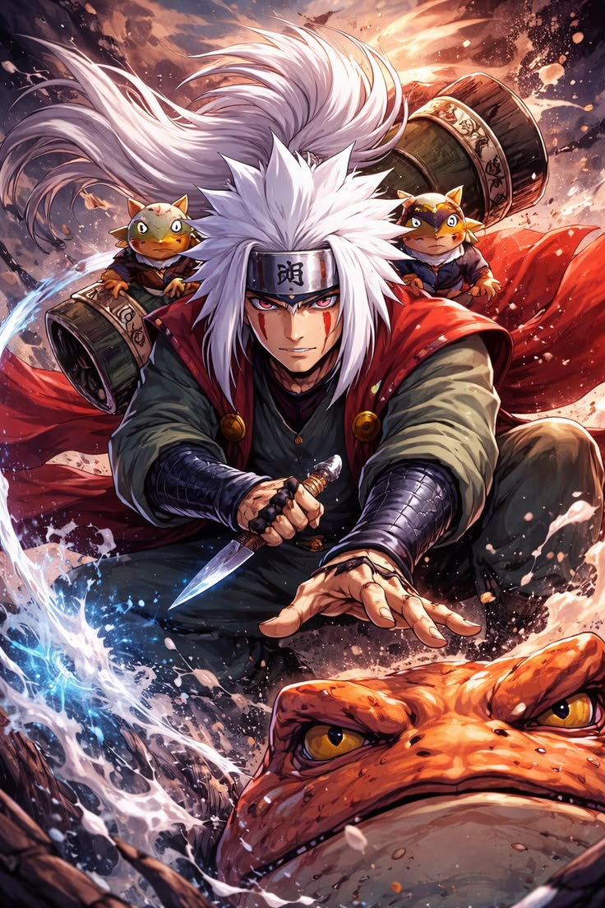

Jiraiya is one of the most legendary and respected shinobi in Naruto, known for his immense power, wisdom, and unique personality. He was one of the three legendary Sannin from Konohagakure, trained by Hiruzen Sarutobi alongside Tsunade and Orochimaru. Despite his humorous and perverted nature, Jiraiya was a highly skilled ninja who mastered powerful techniques, including Sage Mode learned at Mount Myoboku. He traveled the world as both a warrior and a writer, seeking knowledge and hoping to bring peace to the ninja world.
Jiraiya was also a great mentor who trained Minato Namikaze and later Naruto Uzumaki, shaping them into strong and compassionate leaders. He believed Naruto could fulfill an important prophecy and change the future. His life was marked by both achievements and regrets, especially regarding his former student Nagato. In the end, Jiraiya sacrificed his life while investigating the Ak
Jiraiya has a rich and layered personality that makes him one of the most memorable characters in Naruto. On the surface, he appears carefree, humorous, and often acts like a “pervy sage,” frequently chasing women and writing adult-themed novels. This playful and comedic side helps lighten serious situations and makes him approachable, especially to his student Naruto Uzumaki.
However, beneath this lighthearted behavior lies a deeply wise and thoughtful individual. Jiraiya is highly intelligent and observant, with a strong understanding of human nature and the pain caused by conflict. He believes strongly in peace and dreams of breaking the cycle of hatred in the ninja world. His experiences, including the loss and failure involving his student Nagato, shaped his more serious and reflective side.
Jiraiya is also incredibly loyal and compassionate. As a mentor, he is patient, supportive, and willing to risk his life for his students. He balances humor with wisdom, confidence with humility, and strength with kindness. This combination of traits makes Jiraiya not just a powerful ninja, but a deeply human and inspiring character.
Jiraiya is one of the most powerful shinobi in Naruto, known for his wide range of advanced abilities and versatility in battle. As a legendary Sannin of Konohagakure, he mastered numerous forms of ninjutsu, making him a formidable opponent. One of his greatest abilities is Sage Mode, which he learned at Mount Myoboku, allowing him to enhance his strength, speed, and sensory perception by using natural energy. He is also skilled in summoning jutsu, calling powerful toads like Gamabunta to assist him in combat.
Jiraiya can use powerful techniques such as the Rasengan, which he later taught to Naruto Uzumaki, along with various fire-style and barrier jutsu. In addition to his combat skills, he is highly intelligent and an expert spy, gathering important information about dangerous groups like the Akatsuki. His combination of strength, strategy, and unique sage abilities makes him one of the most respected and dangerous ninjas in the series.

Jiraiya undertook many important missions throughout Naruto, but his most significant mission was his infiltration of the Hidden Rain Village, known as Amegakure. This mission was given to him by Tsunade, the Hokage of Konohagakure, with the goal of gathering intelligence about the mysterious leader of the Akatsuki, known as Pain. During this dangerous mission, Jiraiya secretly entered Amegakure and discovered that Pain was actually his former student, Nagato. Despite the emotional shock, Jiraiya chose to continue his mission to uncover Pain’s secret abilities. He bravely fought against multiple powerful opponents, showing his incredible strength and use of Sage Mode.
Even when he realized he could not win, Jiraiya did not retreat. Instead, he used his final moments to send a coded message back to Konoha, revealing a crucial clue about Pain’s true nature. This mission ultimately cost him his life, but his sacrifice provided vital information that later helped Naruto Uzumaki defeat Pain. His final mission highlighted his courage, dedication, and unwavering loyalty to his village.
Jiraiya’s Sage Mode is one of his most powerful and distinctive abilities in Naruto, showcasing both his strength and his deep connection to natural energy. He learned this advanced technique at Mount Myoboku, the sacred land of the toads, where he trained under great sages like Fukasaku and Shima. Sage Mode allows Jiraiya to gather and balance natural energy with his own chakra, significantly enhancing his physical abilities such as strength, speed, durability, and sensory perception.
However, unlike a perfect Sage, Jiraiya’s Sage Mode is considered imperfect because he cannot fully balance the energy on his own. As a result, his appearance changes noticeably, with more toad-like features, including facial markings and slight physical transformations. To overcome this limitation, he relies on Fukasaku and Shima, who merge with his shoulders and help him gather natural energy, allowing him to maintain the form longer and use powerful senjutsu techniques effectively.
In Sage Mode, Jiraiya gains access to unique abilities such as powerful toad-based genjutsu, including the Demonic Illusion: Toad Confrontation Chant, which can trap enemies in a powerful auditory illusion. He can also unleash enhanced versions of his ninjutsu, making his attacks far more destructive. This form greatly increased his combat effectiveness during his battle in Amegakure against Nagato’s Pain. Despite its imperfections, Jiraiya’s Sage Mode demonstrates his mastery, experience, and determination, solidifying his status as a legendary ninja.